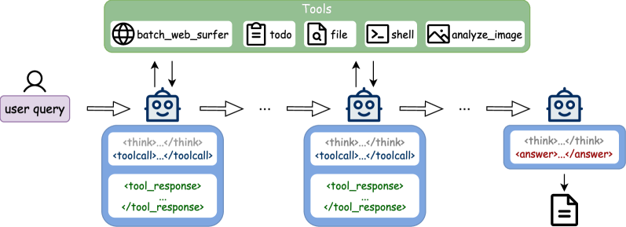
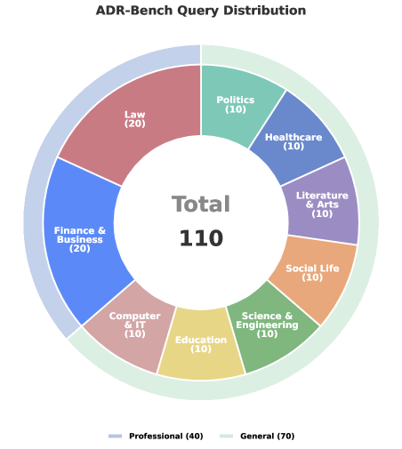
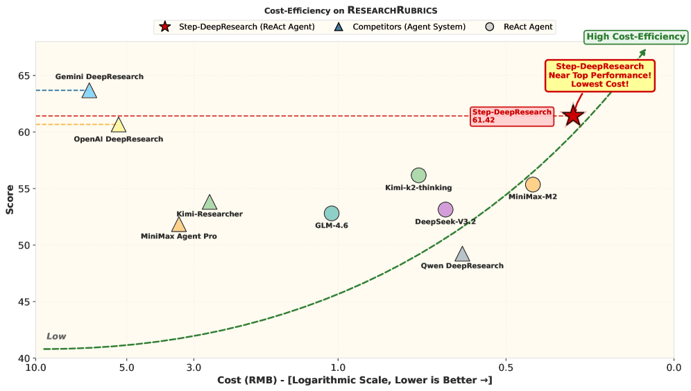
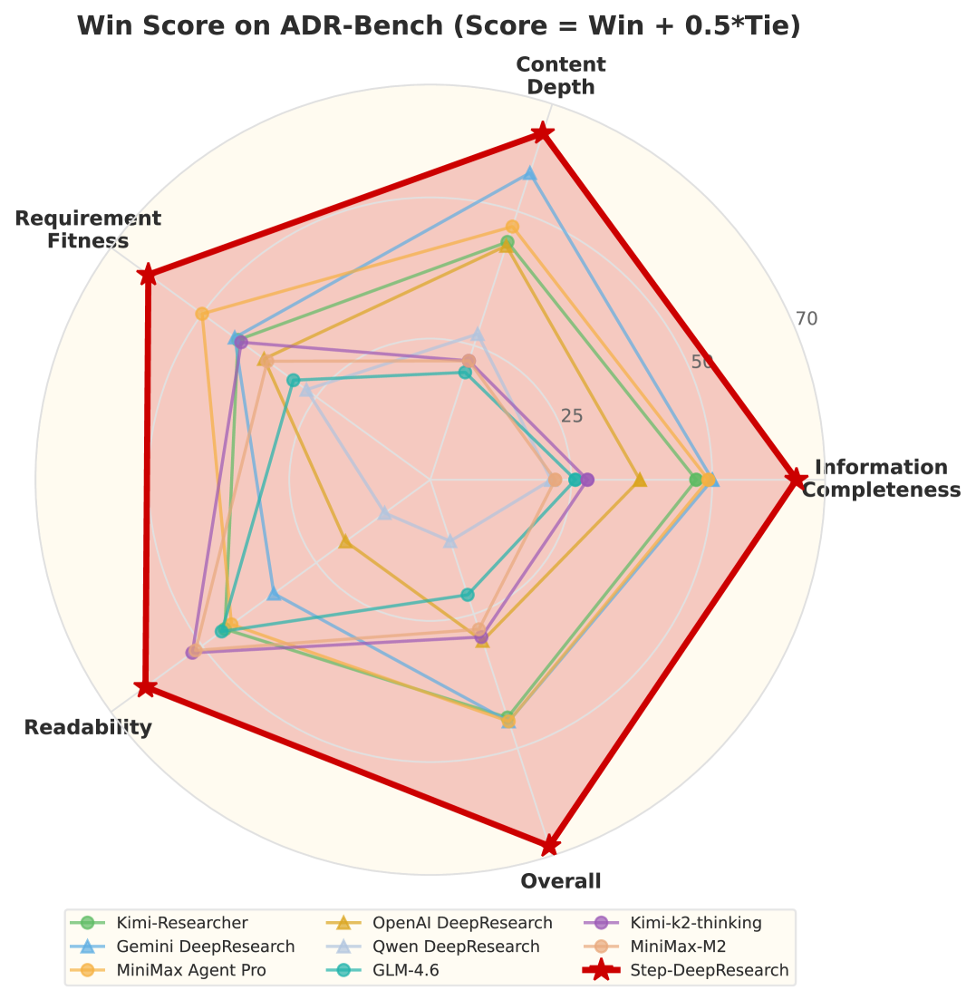

用「原子能力」数据策略，把一个 32B 中等模型，训练成专家级、低成本的深度研究 Agent
现在的研究型 Agent 大多是「外挂复杂工作流 + 大模型」，或者被多跳问答（multi-hop QA）带偏成「高效爬虫」。 Step-DeepResearch 换了个思路：把训练目标从「预测下一个 token」改写成「决定下一个原子动作（atomic action）」， 围绕规划、信息获取、反思验证、报告写作四大原子能力合成数据，再用 Mid-training → SFT → RL 渐进训练，配合 Checklist 式 Judger 奖励， 最终让一个 32B 单 Agent，在质量上追平 OpenAI / Gemini DeepResearch，成本只有它们的约 1/10。
Deep Research 被视为通用 Agent 的「北极星」能力——处理开放式、长程、高复杂度的信息任务。 但 benchmark 上的分数和真实可用性之间，存在一道明显的鸿沟。论文把原因归结为任务定义的错位。
目标是定义明确、有闭式答案的查询，优化的是检索准确率。本质上像一次精准的「查资料」。
是一个迭代过程：意图拆解 → 规划 → 用工具 → 跨源验证 → 综合成结构化报告。需要的是「研究员」的思维闭环。
论文指出，问题出在大家拿多跳问答（multi-hop QA）当事实上的优化目标。这种压力会把 Agent 带偏：
论文把现有工作分成两类对照。理解它们的局限，才能理解 Step-DeepResearch 为什么选择「端到端、原子能力、单 Agent」。
代表系统：OpenAI DeepResearch（o3-mini 推理模型 + 多步网页探索 + 异步任务管理）、Gemini DeepResearch（动态研究蓝图 + 交互式计划修订 + 100 万 token 上下文）、Claude Research、Perplexity Deep Research（Bing 式索引 + Sonar API，BM25 与稠密向量重排）。开源侧有 LangChain Open Deep Research（plan-and-execute + 自反思找知识缺口）、DeepResearchAgent（分层多 Agent）、Together AI Open Deep Research。
用预定义的工作流模式（规划→执行→反思→补搜）把研究流程编排出来，依赖外部脚手架而非模型自身能力。
这类系统本质上把固定的工作流模式硬编码进架构，对系统复杂度要求很高；而用 ReAct 等简单范式实现时，在专业场景下研究深度往往不够，满足不了真实需求。
代表系统：DeepResearcher（真实网页环境用 GRPO 端到端 RL，涌现出规划、跨源验证、自反思）、Kimi-Researcher（端到端 agentic RL 支持长程多轮搜索推理 + 上下文管理 + 异步 rollout）、Tongyi DeepResearch（统一 agentic mid-training 与 post-training + 自动数据合成 + on-policy RL）。方法学上还有 WebRL（自主课程学习 + KL 约束策略更新）、Search-R1（RL 增强的搜索推理）。
把检索、推理等能力直接训练进模型，让模型在真实环境里通过试错学习，而不是依赖固定脚手架。
现有端到端工作仍主要在提升「搜索效能」（检索准确率、查询优化），缺少对深度研究真正关键的「原子核心能力」的系统化构造策略——比如长程逻辑推理、多源交叉验证、高质量报告写作。此外，如何在保持高性能的同时压低模型规模与推理成本，仍是行业难题。
这是全文的思想原点。预训练让模型有了海量知识；但后训练要让它在巨大的动作空间里做长程推理。 直接在原始 token 级空间里探索，不仅算力昂贵，还会因为分支因子随序列长度指数增长而陷入局部最优。
论文定义「原子能力」为一组可迁移、高层的动作抽象，它们构成一个紧凑的动作子空间 𝒜atomic ⊂ 𝒜token。数据构造的目标，就是找到一个最优子空间，同时最小化两类误差：
在「保留关键技能」与「规划逻辑清晰」之间求 Pareto 最优——这就是把研究能力拆成四个原子能力的动机。
下面两节，正是围绕这四个能力分别讲「怎么造数据（第四节）」和「怎么训练（第五节）」。
论文不孤立地堆数据集，而是围绕四个原子能力，分别设计 query 合成与轨迹生成策略。 点开每张卡片，看每个能力具体「怎么造出高密度、有逻辑结构的训练数据」。
高质量文档（开放获取的技术报告、学术综述、研报）本身就是复杂研究任务的最终产物，里面隐含着规划逻辑。论文反过来用它们造数据：
为 Agent 生成执行轨迹，计算它与预设 plan 的对齐度，剔除那些「完成了任务但严重偏离预设 plan」的轨迹，确保模型学到的是严格遵循已知 hindsight 的执行过程。
在 Wikidata5m、CN-DBpedia 等开源知识图谱上做受控子图采样：
针对文档间的关联检索能力，用自建索引库 Wiki-doc，利用其天然超链接结构：从随机实体出发，用 few-shot 引导一个 web 搜索 Agent 在文档索引里做拓扑游走——在不知道目标的情况下沿超链接挖信息，直到达到最大步数或收集到足够信息，最后汇总路径上所有节点信息，反向生成 ⟨Query, Answer⟩ 对。
用 QwQ-32b 当难度过滤器：凡是它在默认 ReAct 框架下能解出的 query，都视为「简单题」剔除。原因很巧妙——QwQ-32b 与本文模型同一个 base、同样的预训练知识，但缺少 agent 专项训练，所以它能解的就是不需要专项训练的简单任务。
用「专家模型生成 → 结果验证 → 多轮反思」的闭环，产出高质量思考轨迹：
对最终反思后答对的轨迹做专门后处理清洗：移除「according to user hints（根据用户提示）」这类人工诱导痕迹，让输出看起来像模型完全自发的自省与纠错。这不仅强化了挖掘未知信息的能力，还教会模型通过多源比对过滤不可靠数据。
从脱敏真实数据里清洗出数千条 ⟨段落, 判定结果⟩ 作种子，构建一个模拟人类专家核查过程的多 Agent teacher 工作流，把完整执行路径记录为 agent trace：
生成的验证轨迹再经严格后验过滤：把验证点、结论、证据当三元组输入 judge 模型，检查报告结论与证据是否逻辑自洽。
报告写作不是简单的文本生成，而是对碎片信息的结构化重组。论文把它拆成两个阶段：
构建大规模 ⟨Query, Report⟩ 对：报告来自严选的高质量人类报告（研报、深度综述），query 用前面的逆向工程方法得到。这一阶段模型聚焦于如何像专家一样组织语言、引用数据、展开深入论证，不关注具体搜索过程。
焦点转向用户约束的指令遵循与计划一致性：对带 plan 元数据的 query，要求报告严格遵循预设结构；生成轨迹并与 plan 做对齐检查，过滤偏离样本；对「轨迹质量高但报告格式差」的样本，用专门的 system prompt 基于末轮状态重新生成报告，保证内容详实又精准响应需求。
在 Qwen2.5-32B-Base 之上，论文用 Mid-training → SFT → RL 三阶段渐进训练， 分工明确：中期训练「扩能力」、SFT「对齐行为」、RL「优化目标」。点「下一步」看每一阶段往模型里加了什么。
第一阶段中期训练专注于注入规划与任务分解、信息获取、反思验证、报告生成等原子能力。它不直接优化任务完成率，而是系统化构造高质量、面向能力的数据，让模型在规划、证据整合、自我纠正等关键维度形成稳定、可泛化的中间表征。此阶段不引入显式工具调用，确保模型在纯文本条件下先练好理解与推理。
📈 训练动态：每 5B tokens 存一次 checkpoint，150B tokens 内 SimpleQA、TriviaQA、FRAMES 持续上升，其中 FRAMES 最大涨幅约 +10.88%（SimpleQA +1.26%，TriviaQA +2.30%），到 150B 仍未收敛——说明还有提升空间。
在第一阶段能力稳定收敛的基础上，第二阶段把上下文扩到 128K，聚焦真实复杂任务场景，强化超长上下文下的检索、规划、工具增强推理。数据更贴近实际应用，覆盖网页交互、搜索流程、多工具协作等复杂结构。
引入显式工具调用后，模型不仅要生成连贯的中间推理，还要学会何时、如何选择并调用外部工具，并把返回结果整合进后续推理——显著提升 agent 式任务的实战效果。
中期训练已把单项原子能力装好，SFT 阶段的核心从「单独教能力」转向把这些能力组合起来，提升长程任务的端到端表现。数据是两类全链路轨迹：Deep Search（有标准答案的多跳搜索）和 Deep Research（开放式综合研究，覆盖意图理解→规划→交叉验证→报告生成）。
前两阶段依赖「教师」轨迹，无法通过真实试错改进。RL 把模型直接接入真实工具环境，每个 deep-research 任务作为一个 episode：意图分析→复述 query→分步规划→围绕子问题组织工具调用→多源筛选对比交叉验证→撰写完整报告；episode 结束后由 Rubrics Judge 按预定义 rubric 打分，转成奖励信号更新策略。
关键设计：用 PPO（带 critic）而非无价值函数的策略梯度变体——critic 能提供更可靠的 token 级价值估计、识别并降权重复循环等有害模式；GAE 取 γ=1, λ=1（不折扣、不额外平滑），简化长程稀疏奖励下的信用分配。Rubric 奖励、奖励映射的细节见下方两张小卡片。
📈 RL reward 曲线随训练持续上升，说明 Agent 在任务分布上有效优化了策略。
高质量 rubric 难收集、成本高，所以要合成。第一步：用强 LLM 由少量优质样例先生成一个「隐藏任务摘要」和一组细粒度 rubric（每条 rubric = 评价维度 + 重要性权重，并标注是 explicit / implicit / negative 要求）。第二步：反过来基于这些 rubric 合成真正的用户任务 query，并重新评估每条 rubric 的角色——若与初始角色不一致，整条样本丢弃。最后由独立 judge 做目标一致性验证，给一致性分并决定是否保留。
最初把每条 rubric 判成「完全满足 / 部分满足 / 不满足」三档 {1, 0.5, 0}，但发现「部分满足」这一中间档，不同强模型之间、模型与人类专家之间一致性都很低，导致奖励信号不稳。于是改成按 rubric 性质做不对称二值化：
再结合每条 rubric 的权重（可正可负）算总奖励，信号更可分、收敛更快。
Stage 1A（32K，纯文本）数据构成：
| 数据类别 | 来源 | 主要形式 | 能力指向 |
|---|---|---|---|
| 主动阅读·通用知识 | Wiki、百度百科 | QA、改写 | 信息获取 |
| 主动阅读·学术 | 学术文章 | QA、改写 | 信息获取 |
| 合成知识数据 | PleIAs SYNTH | 合成文本、结构化 QA、推理痕迹、多语 | 报告生成 + 信息获取 |
| 摘要数据 | 自有 / 混合 | 文档 → 摘要 | 报告生成 |
| 推理数据 | 自有 / 混合 | 多步推理文本 | 规划与任务分解 |
| 反思数据 | 自有 / 混合 | 自检与纠错 | 反思与验证 |
Stage 1B（128K，引入工具）数据构成：
| 数据类别 | 来源 | 主要形式 | 能力指向 |
|---|---|---|---|
| URL QA | 自有 / 混合 | URL + QA | 信息获取 + 规划 |
| 深度搜索数据 | 自有 | 搜索步骤 + 工具调用 | 信息获取 + 规划 |
| 网页浏览数据 | Agent-data-collection | 网页导航 + 工具调用 | 信息获取 + 规划 |
| 规划数据 | 自有 / 混合 | 任务规划 + 工具调用 | 规划与任务分解 |
| 摘要数据 | 自有 / 混合 | 长文档 / 长对话摘要 | 报告生成 |
| 推理数据 | 自有 / 混合 | 长程对话推理 | 规划与任务分解 |
| 反思数据 | 自有 / 混合 | 反思与纠错过程 | 反思与验证 |
| 通用对话数据 | 高质量对话语料 | 多轮对话 | 保持通用语言交互能力 |
两阶段对比（Table 3）：
| 维度 | Stage I | Stage II |
|---|---|---|
| 最大上下文 | 32K | 128K |
| 主要目标 | 知识注入 / 基础理解 | 检索 / 规划 / 工具增强推理 |
| 数据侧重 | 百科 / 学术 / 认知模式 | 网页 / 搜索 / 工具调用 |
| 是否含工具调用 | 否 | 是 |
| 任务复杂度 | 中 | 高 |
| 应用场景 | 理解 / 推理 / 简单 QA | 深度搜索 / Agent 场景 |
与依赖多 Agent 协调或重型工作流的系统不同，Step-DeepResearch 只用一个精简的 ReAct 风格单 Agent， 把复杂研究任务重构成「推理—行动—观察」的动态循环。下面这张原文架构图，是理解整套系统的核心。

一句话总结：整套架构就是「思考 → 调工具 → 看结果 → 再思考」的反复循环，由模型自身决定何时停止、何时交付，三个核心阶段（规划与反思、工具执行、反馈与交叉验证）都嵌在这一个循环里。
先识别用户意图制定行动计划；后续每轮自发回顾此前结果，对照目标校验当前状态，实现动态自我纠正。
把计划落成具体动作，选最合适的工具集（如 batch_web_surfer 搜索、todo 跟踪）发起精确的数据获取请求。
新返回注入下一轮推理，与历史上下文交叉验证——化解冲突、过滤虚假，构建逻辑严密的证据链。
设计哲学有三条：能力对齐（提供与人类做研究相当的操作能力）、信息适配（输出结构化、高信息密度，并考虑上下文窗口与失败恢复）、架构精简（尽量合并功能相近的工具）。
现有 benchmark（BrowseComp、GAIA、HLE 等）大多偏「闭卷考试」式的多跳检索，且高质量中文 Deep Research 评测稀缺。 论文构建 ADR-Bench（Application-driven Deep Research Benchmark），让自动指标更贴近人类感知的「真实可用性」。

一句话总结：这张图既是「数据集组成」，也是「评测方法分流」的依据——领域分布贴近真实使用，专业 / 通用双轨决定了每道题用 rubric 还是用人工对比来评。
开放、无标准答案，难以用枚举 rubric 客观刻画。改用盲审两两对比：每题给评审员看两个模型的报告，做五档判断（左好 / 右好 / 都好 / 都中 / 都差），并在信息完整度、内容深度、需求契合、可读性四个子维度打分 + 文字理由。对比引入参照锚点，更稳、更贴近主观感知。
选金融、法律为代表，由专家设计相对受限的真实任务，多轮交叉验证打磨出枚举式 rubric，覆盖专业报告应有的要素，用以严格衡量专业能力——人工对比成本太高、迭代太慢，这里更适合自动化。
每条 rubric 只描述一个清晰、单一的要求。
有客观判断标准，能被明确核查（如「是否引用了民法典第 XXX 条」）。
措辞清楚，不能有多种解读。
条目之间相互独立、无内容重叠。
直接对应任务核心要求，不引入无关维度。
核心结论一句话：一个 32B 单 Agent，在质量上进入第一梯队，在成本上断层领先。 下面两张原文图，分别从「成本—质量」和「专家盲评对战」两个角度，给出最直观的证据。

一句话总结：这张图是全文主论点的可视化——把「质量」和「成本」放在一起，Step-DeepResearch 用十分之一的钱，拿到了第一梯队的质量。

一句话总结：在人类专家盲评的多维度对战里，Step-DeepResearch 的 Win Score 在每个维度都领跑，印证它不是单点强，而是综合可用性强。
金融、法律子集术语密度高、多阶段推理、有严格合规风险约束。论文加入显式负向评分，专业致命错误直接判该报告「不可用（0 分）」。结果呈清晰的三梯队分布：
| 梯队 | 分数区间 | 系统 |
|---|---|---|
| Tier 1 | 25 – 35 | Gemini DeepResearch（断层领先） |
| Tier 2 | 15 – 25 | Step-DeepResearch、Kimi-Researcher、Kimi-k2-thinking、OpenAI DeepResearch |
| Tier 3 | 0 – 15 | Qwen DeepResearch、MiniMax-M2、MiniMax Agent Pro、GLM-4.6 |
关键洞察：在严格负分约束下，agent 框架的流程优化无法弥补模型本身的知识缺口，分数更多与模型固有的领域知识覆盖相关。Step-DeepResearch 能站在第二梯队前列，正是得益于其金融 / 法律场景的领域专项训练，让它具备与更大参数模型相当的专业度。
同一道关于「大模型 repo 级代码工程能力 / SWE 数据构造」的复杂研究 query，对比有中期训练 vs 无中期训练版本：
| 维度 | Step-DeepResearch（含 Mid-training） | w/o Mid-training |
|---|---|---|
| 需求契合 | 完整抓住用户多层次需求，明确优先列出给出 PR/Issue 与 repo 级数据构造与改写方案的工作。 | 仅部分遵循指令，对数据构造细节着墨有限、对齐更弱。 |
| 信息完整度 | 覆盖更广：SWE-bench 系列、SWE-smith、SWE-Factory、Multi-SWE-bench、SWE-RL、DeepSWE、InstructCoder、Coeditor、RepoBench、SWE-agent-trajectories、SWE-Fixer。 | 只覆盖六项工作，遗漏了基础数据集与关键作者。 |
| 内容深度 | 给出端到端数据处理流水线、具体代码级示例，深入讨论 Issue-PR 配对、测试用例隔离、自动化环境构建等机制，并配结构化对比表。 | 较浅，缺乏机制级讨论与对比。 |
结论：中期训练带来的报告质量提升与规划、信息获取等原子能力的注入强相关——这也是消融对比中「有 vs 无中期训练」拿到 30 胜 21 负的微观解释。
早期模型 rubric 高分（57）却被人评为「信息堆砌而非深度分析」——暴露 checklist 评分偏向「信息召回」而非结构连贯。引入 Synthesis-driven Drafting 把工具轨迹转成有逻辑演绎的段落、严格限制无序列表，并用 Pairwise LLM Judger 做质控。
即便注入显式时间戳，模型仍常「时间错乱」——把当前日期当成「模拟设定」，或习惯性给查询加上过去年份（如 2023/2024）。数据清洗时做严格时间逻辑校验，凡把时间无关查询锚到过去时间戳的轨迹一律剔除。
针对中英文混杂影响可读性，用正则 + 语言密度检测，剔除不必要语言混用的低质轨迹，保证输出一致流畅。
论文在结论里坦诚列出了当前的短板，这往往比分数更能帮你判断「这套方法适不适合你的场景」。
面对 API 变动、异常返回、跨工具复杂组合的长链任务时，系统仍有脆弱点。
高噪声、证据碎片化场景下，容易产生「看似合理却无法证实」的推断。
结构组织、结论与证据的显式映射，仍有提升空间。